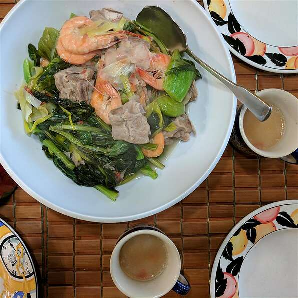

Adobo

Description:
Sinigang is a sour soup native to the Philippines. This recipe uses pork as the main ingredient.
Other proteins and seafood can also be used. Beef, shrimp, fish are commonly used to cook sinigang.
The chicken version, on the other hand, is called sinampalukang manok.
Ingredients
- 2 ½ pounds pork neck bones
- 2 pounds pork spareribs
- Water to cover
- 1 tablespoon salt
- 2 tablespoons minced garlic
- ⅓ cup white vinegar
- ⅔ cup low sodium soy sauce
- 1 tablespoon garlic powder
- 2 teaspoons black pepper
- 1 bay leaf
- 1 ½ onions, quartered
- 2 tomatoes, quartered, or more to taste
- 1 taro, peeled and cut into large chunks
- ½ cup fresh lemon juice
- 2 tablespoons fish sauce
- 1 pound bok choy, chopped
- 1 large leek, chopped
- 5 head-on shrimp
Steps
- Place pork neck bones and spareribs in a stockpot with water to cover.
- Add salt and bring to a boil, skimming the fat off the surface of the broth.
- Reduce heat; add onions, tomatoes, and taro.
- Boil until pork meat is very tender, 30 to 40 minutes.
- Stir lemon juice and fish sauce into the broth.
- Continue boiling until flavors come together, about 15 minutes.
- Add bok choy, leek, and shrimp.
- Cover, reduce heat, simmer until shrimp are opaque and bok choy is tender, about 10 minutes more.